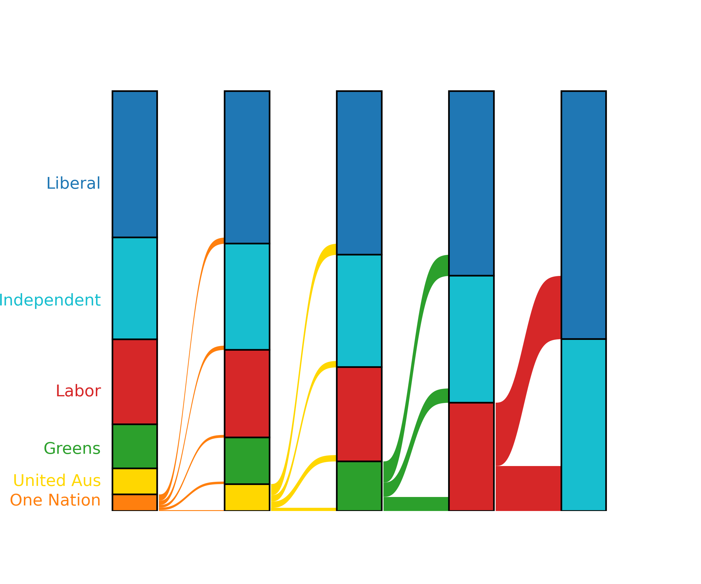

Misc Data Visualisations Of Mine
Across teaching and random side projects I've made some interesting plots too!
A Pedagogical Simulated Universe

One of my proudest achievements so far is programming a simulated universe in Python (from scratch!) for us to use in teaching a cosmological distance ladder in the PHYS3080 course at UQ — you can read more about it here. As part of this simulation, we create different populations of stars which is well visualised on a Hertzsprung-Russell diagram. The blackbody colour of each star (as given by its temperature) is also plotted, which very clearly represents what each species of star would look like. The points plotted as triangles also show regions of stellar variability, in this case well separated into two bands.
A Preferential Voting Calculator
After moving to a new city in 2025, I was interested in learning about my new federal electorate. I was lured to the Wikipedia page of Bradfield, Sydney, and fell into a rabbit hole of voting algorithms. Immediately I knew that I had to program my own calculator for preferential, or instant-runoff voting. You can access my code repository for my implementation on GitHub. As part of this algorithm, it's interesting to visualise the flow of preferences with an alluvial diagram, as you can see below.



{kind=link}